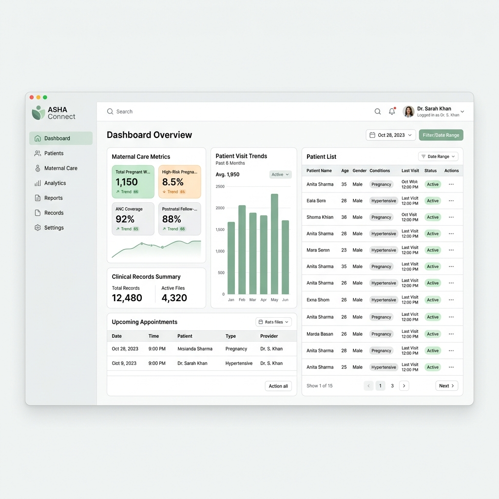

Back to Ventures
ASHA Connect & Medicord

ASHA Connect (funded by ASHA Japan) and Medicord (developed during MIT GSL labs incubation) constitute a clinical community care system bringing digital EMR tools to rural Nepal.
Engineering Scope & Health Standards
- Digitized patient records and census workflows for community health workers serving over 40,000 citizens in Dang.
- Built gestative maternal care tracker applications conforming to international Bahmni standards.
- Developed COVID-19 quarantine point of entry screening dashboard implemented and utilized by the World Health Organization (WHO) at borders.
- Conformed application schemas to meet HL7/FHIR health interoperability, HIPAA compliance protocols, and DHIS-2 reporting portals.